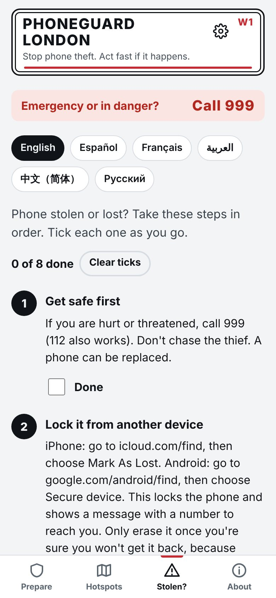

W1Безопасность4,70
PhoneGuard London
- Боль
- 71 391 кража и грабёж телефонов в 2025 (−12% за год, но +54% к 2022). Возвращают около 2,4% телефонов. Около 40% краж приходится на Westminster и West End.
- Что делает
- Чек-лист «броня телефона» для iPhone и Android: Stolen Device Protection, SIM PIN, Theft protection, IMEI.
- Живая карта мест краж по данным police.uk, без ярлыка «опасный район».
- План «Украли: первые 15 минут» на 6 языках: заблокировать, SIM, полиция, банк через 159, фишинговые «мы нашли ваш телефон».
- Ценность для властей
- Met, MOPAC и мэр: прямой приоритет (Command Cell и £4,5 млн с февраля 2026). Быстрая блокировка обесценивает краденое.
Офлайн: чек-лист и план действийОнлайн: карта police.uk
